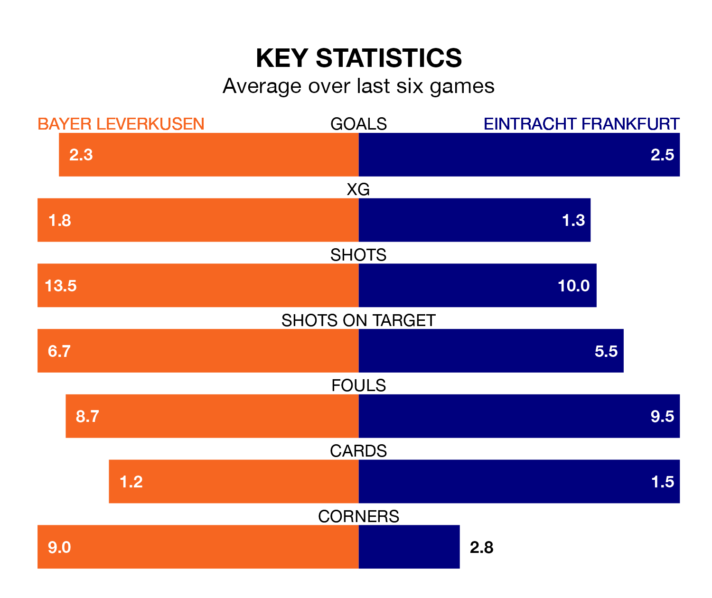

Two of the Bundesliga's meanest defences go head-to-head at BayArena on Sunday, when Bayer Leverkusen host Eintracht Frankfurt.
No teams have conceded fewer goals than Bayer to date: the home side have let in just 12 goals in 14 games.
Eintracht Frankfurt have conceded 16 goals in 14 games, giving them the joint-fourth tightest back line so far this season.
Key to Bayer Leverkusen's home form has been Lukáš Hrádecký, who has allowed 0.86 goals past him per 90 minutes, compared to 1.15 for Kevin Trapp in the opposite net.
Bayer are top of the table after 14 games, of which they have won 11 and drawn three, earning 36 points.
Eintracht Frankfurt are six places behind Bayer Leverkusen in seventh, with five wins and six draws putting them on 21 points.
In the last 10 years, Bayer and Eintracht Frankfurt have played each other on 20 occasions. Bayer won 12 of them, Eintracht Frankfurt seven, and they drew once.
On average, Bayer Leverkusen scored 2.3 goals and Eintracht Frankfurt 1.4 in those matches.
Their last meeting was on April 8, when Bayer won 3-1 at home.
The hosts are in good form in the Bundesliga, with four wins and two draws from their last six games.
With two wins and two draws over that period, the away side's form is much worse – they have taken eight points from 18, compared to Bayer's 14.
In Victor Boniface, Bayer have one of the league's sharpest shooters so far this season. He has notched eight goals in 14 appearances, to sit fifth in the scoring charts.
His goal rate of one every 149 minutes is slightly quicker than that of Omar Marmoush, Eintracht Frankfurt's top scorer with a goal every 143 minutes, and a total of seven goals in 14 games.
Bayer's last match was on December 10, a 1-1 draw against Stuttgart, with Florian Wirtz getting the goal for Bayer Leverkusen.
Eintracht Frankfurt beat Bayern München 5-1 last time out, on December 9, with Eric Junior Dina Ebimbe (two), Ansgar Knauff, Hugo Larsson and Marmoush on the scoresheet.
